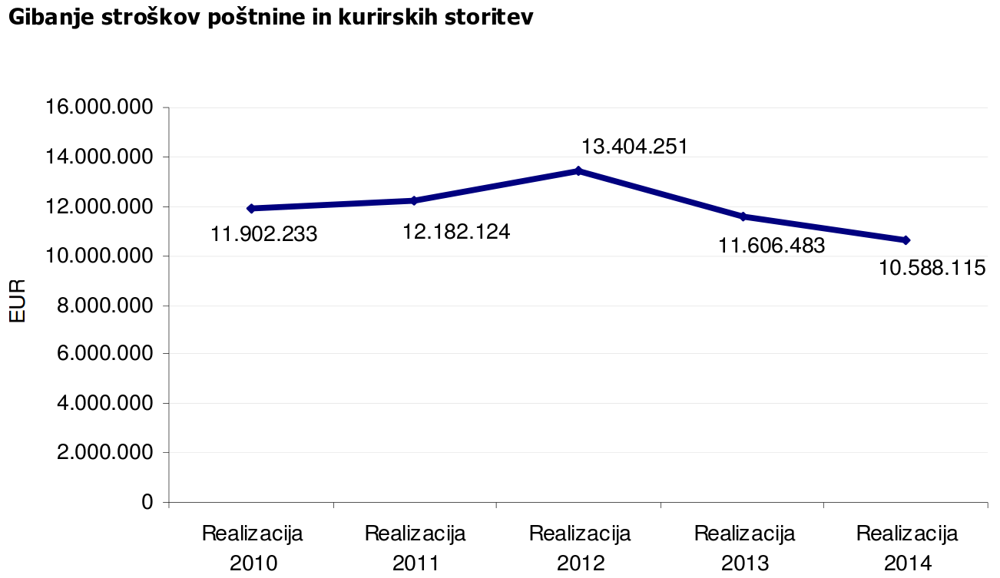
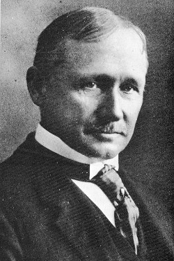
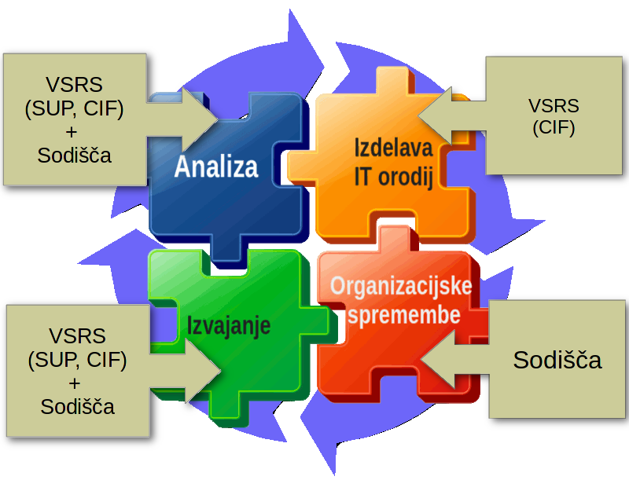
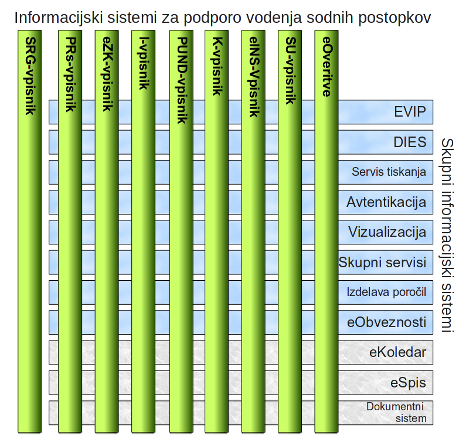
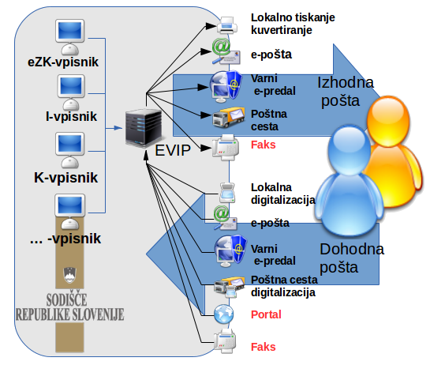
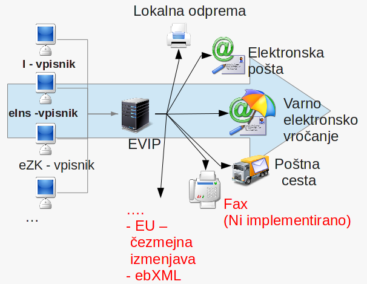
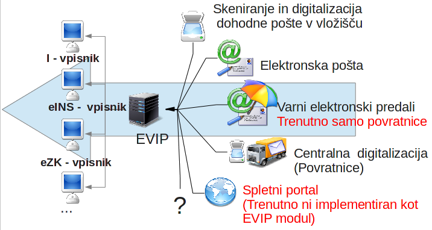
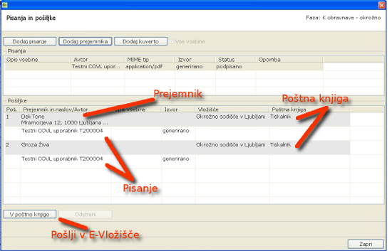

Your browser doesn't support the features required by impress.js, so you are presented with a simplified version of this presentation.
For the best experience please use the latest Chrome, Safari or Firefox browser.
Projekt eVložišče (Evidenca vhodne in izhodne pošte)
mag. Jože Rihtaršič, tehnični vodja projekta eVložišče
Ljubljana, 11. 3. 2016
Sodni sistem
Kranj
Jesenice
Radovljica
Škofja Loka
Krško
Brežice
Sevnica
Ljubljana
Domžale
Grosuplje
Kamnik
Kočevje
Cerknica
Trbovlje
Vrhnika
Litija
Novo mesto
Črnomelj
Trebnje
Maribor
Lenart
Slovenska Bistrica
Murska Sobota
Gornja Radgona
Lendava
Ljutomer
Ptuj
Ormož
Slovenj Gradec
Koper
Ilirska Bistrica
Piran
Postojna
Sežana
Nova Gorica
Ajdovščina
Idrija
Tolmin
Celje
Slovenske Konjice
Šmarje pri Jelšah
Velenje
Žalec
Šentjur
SPLOŠNA SODIŠČA
44 okrajnih sodišč;
11 okrožnih sodišč;
4 višja sodišča;
1 vrhovno sodišče;
SPECIALIZIRANA SODIŠČA
4 sodišča za odločanje o delovnih sporih,
eno od njih tudi za odločanje o sporih iz socialnega zavarovanja.
1 Upravno sodišče - (pristojnost višjege sodišča)
Na slovenskih sodiščih je bilo na dan 31. 12. 2015 zaposlenih 913 sodnikov in 3.179 sodnega osebja.
Izhodna in dohodna pošta
Slovenska sodišča na leto prejmejo v reševanje cca 1 mio zadev:
več kot 2 mio vlog (dohodna pošta);
več kot 6 mio izhodnih pošiljk;
pred 2010 čas odpreme fizične pošte od 0 dni do nekaj mesecev.

Vir: Služba za razvoj sodne uprave, Otvoritev sodnega leta 2016, Ljubljana 2016
Razvoj informacijskih sistemov sodišča
Centre za informatiko pri Vrhovnem sodišču (1996 / 26 zaposlenih):
Zagotavljanje informacijske podpore za vsa sodišča (programska oprema, strojna oprema, izobraževanje, podpora uporabnikom (helpdesk));
Centralno izvajanje javnih razpisov.
Strategija:
uporaba odprtih standardov in tehnologij;
zagotavljanje neodvisnosti od posameznega ponudnika;
tri nivojska arhitektura informacijskih rešitev (podatki, poslovna logika, uporabniški vmesnik);
ponovna uporabnost koda in rešitev.
Optimizacija poslovnih procesov
Do 1900 Več dela se lahko opravi s povečevanjem delovnih ur-> nadure ali zaposlovanje
Frederick Winslow Taylor (1856 - 1915)
S specializacijo in delitvijo dela lahko povečamo učinkovitost proizvodnih procesov:
učinkovita raba kadrov;
učinkovita raba opreme;
izdelava namenskih orodij.

Kultura stalnega izboljševanja delovnih procesov (postopno spreminjanje načina dela);
Informacijske tehnologije omogočajo stvari, ki so pred leti bile še nemogoče.

Kultura stalnega izboljševanja delovnih procesov (postopno spreminjanje načina dela);
Informacijske tehnologije omogočajo stvari, ki so pred leti bile še nemogoče.
Razvoj informacijskih sistemov sodišča

Aplikacija EVIP

Centralna evidenca za vhodno in izhodno pošto;
zagotavlja tehnične rešitve za različne načine sprejema in pošiljanje pošte;
zagotavlja enotno tehnično rešitev za prevzemanje in pošiljanje pošiljk za vse e-vpisnike.
Aplikacija EVIP - moduli izhodne pošte

Aplikacija EVIP - moduli dohodne pošte

Določanje pošiljk
Odprema pošiljk
Vročanje pošiljk
Povratnice
DOLOČANJE POŠILJKE
Na vpisniku:

Izbira vsebine
Izbira naslovnika
Izbira načina vročitve
Postopki vročanja/ način odpreme
Postopek vročitve / način odpreme
Lokalna odprema
Poštna cesta
e-vročanje
Navadno (C5 – bela kuverta)
✓
✓
✓(email)
Priporočeno (C5 – bela kuverta)
✓
o
Priporočeno - tujina (C5 – bela kuverta)
✓
o
OBR. SR. 38
✓
OBR. SR. 39
✓
Obrazec za K-vpisnik
✓
Slovenija CN 07
✓
Tujina CN 07
✓
ZPP navadno
✓
✓
ZPP osebno
✓
✓
✓ (SVEV)
ZKP navadno
✓
ZKP osebno
✓
ZUP
✓
o
Paket s povratnico
✓
Stroški (ZPP Osebno)*
2,5911
2,4290
0,6100
Prihranek
/
0,1621
1,9811
*Izračun je izdelan za sodno pismo ZPP Osebno, teže do 100 g, za katero je poštnina 2,20 EUR. Upoštevani so materialni stroški in strošek kuvertiranja.
ODPREMA POŠILJK
- Lokalna odprema: kuvertiranje in odprema na sodišču;
- Poštna cesta: tiskanje pisanj, kuveritranje in odprema pri zunanjem izvajalcu;
- Elektronsko vročanje: elektronsko vročanje pdf vsebin.